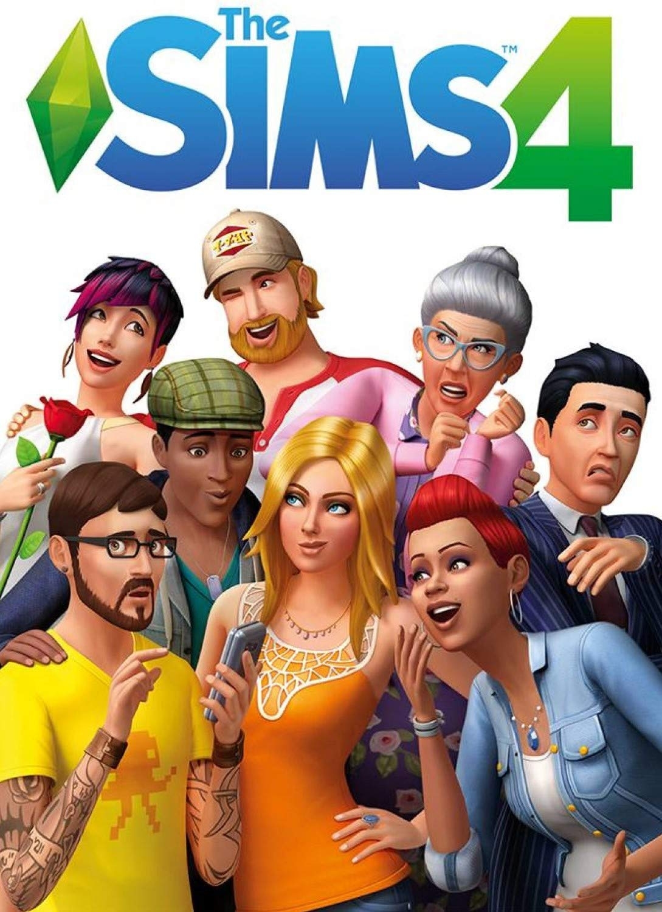
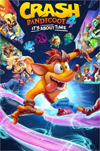
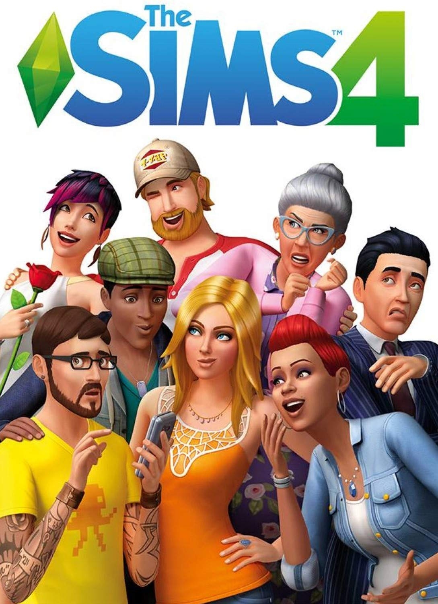
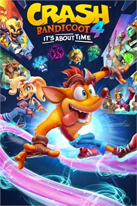

Gaming
Another favourite activity of mine is gaming. I used to play games on consoles since I was young. If you are a gaming enthousiast as me, you know that having friends over, gather all around the console, and either compete or work together to achieve a common goal, is one of the greatest feelings. If you are not an enthousiast, then you might understand the appeal of this.
As the years passed I tried to combine that passion for gaming with my profession. This has lead me in the great discovery of serious gaming. You might be thinking that serious gaming is taking part in competitions or having gaming as a profession, but actually serious games are games that try to achieve something more than just entertainment. The serious games I am working with now aim to help the recovery of patients after major illness or accidents.
Top Favourite Games
Even thought I am focusing in serious games, that doesn't mean that I stopped playing videogames. There are two types on videogames I enjoy the most. MMORPG (MAssive Multiplayer Online RolePlay Game) and open world 3rd person shooter games.
My top favourite titles:

 


